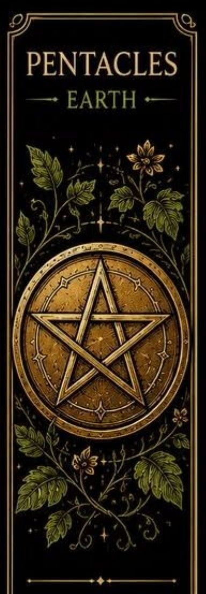
Pentakle sú jednou zo štyroch sád Malej arkány v tarote. Predstavujú materiálny svet, prácu, financie a stabilitu.
Táto sada sa zaoberá praktickými stránkami života a výsledkami dlhodobého úsilia.
Pentakle sú spojené s elementom zeme. Ich karty hovoria o budovaní pevných základov, zodpovednosti, trpezlivosti a dosahovaní konkrétnych výsledkov.
Často sa spájajú s kariérou, majetkom, zdravím alebo každodennými povinnosťami.
Pentakel je päťcípa hviezda umiestnená v kruhu. V tarote symbolizuje spojenie človeka s fyzickým svetom, stabilitou a praktickými hodnotami.
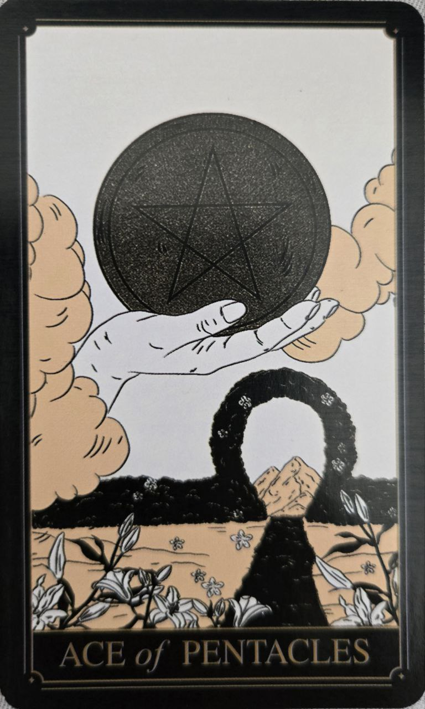
Karta nových príležitostí, stability a materiálneho rastu. Predstavuje šancu vybudovať pevné základy pre budúcnosť.
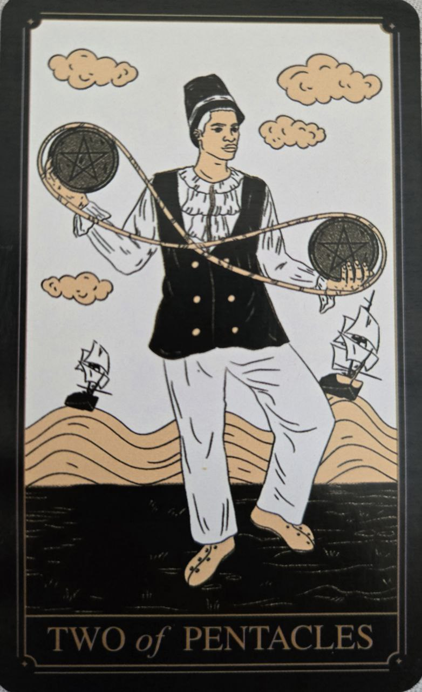
Symbol rovnováhy a schopnosti zvládať viacero povinností naraz. Naznačuje potrebu flexibility a dobrého hospodárenia s časom či zdrojmi.
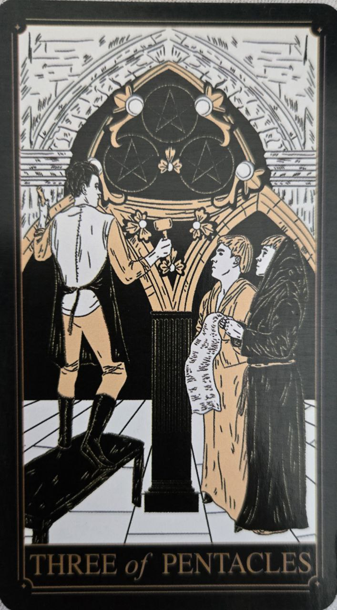
Karta spolupráce, učenia a rozvoja zručností. Poukazuje na význam tímovej práce a spoločného úsilia.
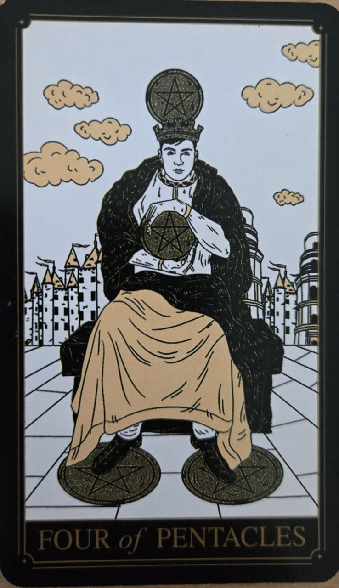
Predstavuje stabilitu, istotu a ochranu toho, čo bolo získané. Môže však upozorňovať aj na prílišnú opatrnosť alebo lipnutie na majetku.
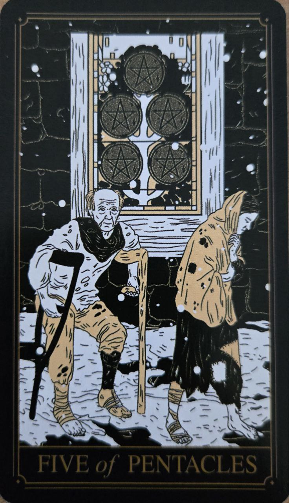
Karta straty, neistoty a náročného obdobia. Pripomína, že pomoc a podpora môžu byť bližšie, než sa na prvý pohľad zdá.
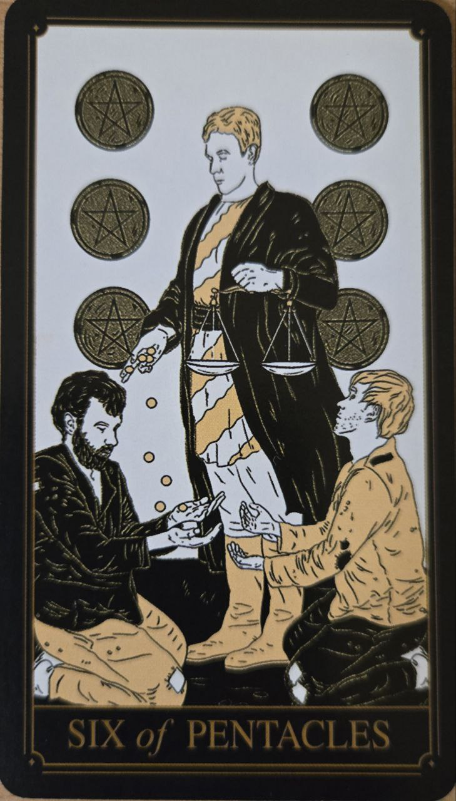
Symbol štedrosti, podpory a spravodlivej výmeny. Naznačuje obdobie dávania, prijímania alebo vzájomnej pomoci.
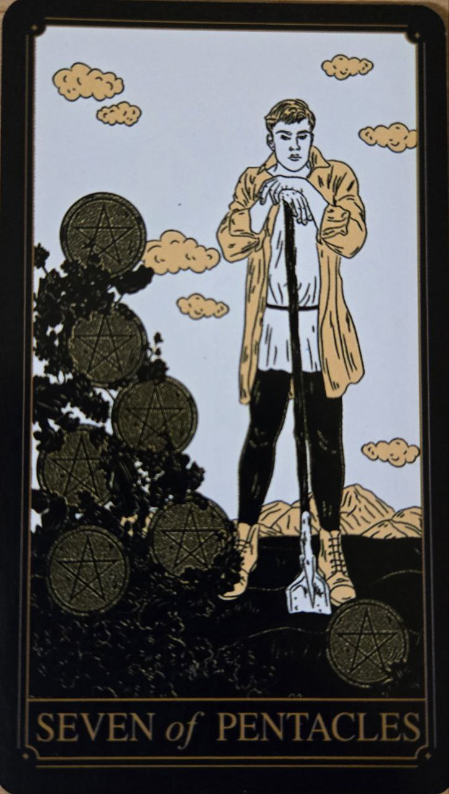
Karta trpezlivosti a hodnotenia dosiahnutého pokroku. Povzbudzuje dôverovať procesu a pokračovať v dlhodobom úsilí.
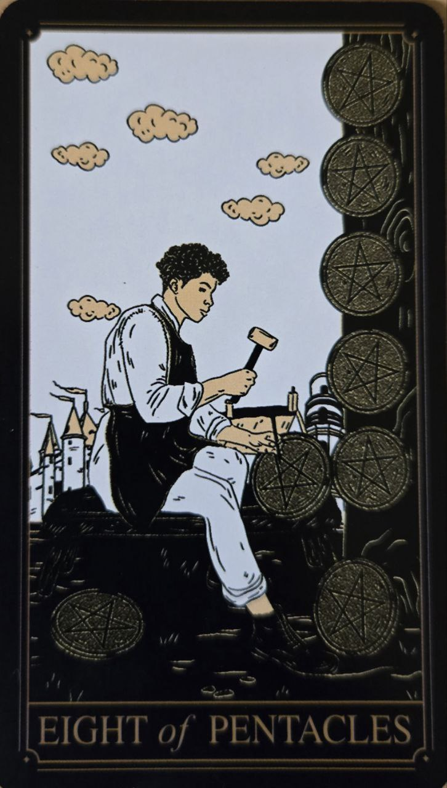
Predstavuje usilovnú prácu, zdokonaľovanie a získavanie skúseností. Hovorí o význame vytrvalosti a rozvoja schopností.
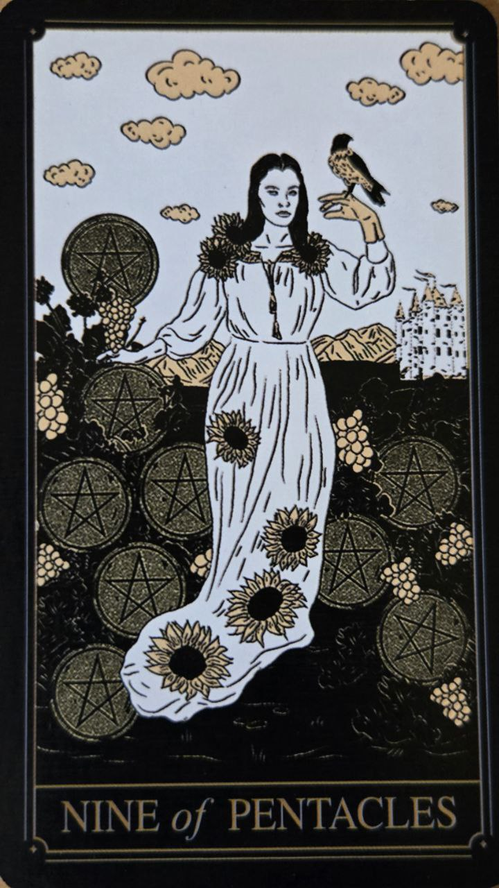
Karta nezávislosti, prosperity a spokojnosti s vlastnými úspechmi. Symbolizuje odmenu za dlhodobú prácu a disciplínu.
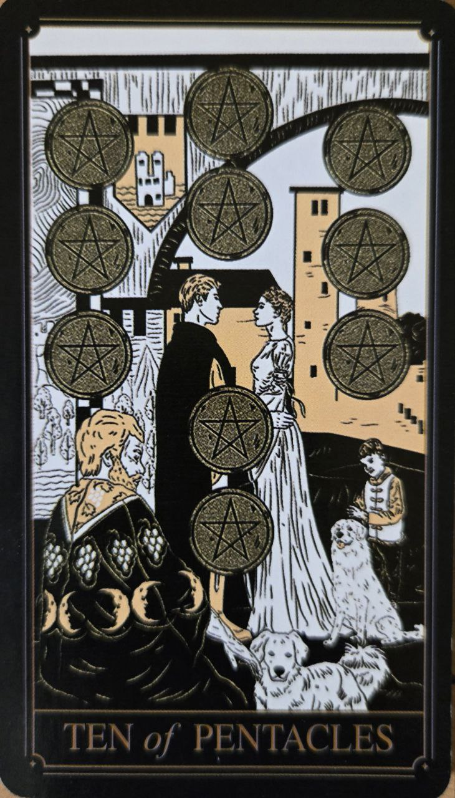
Predstavuje stabilitu, bezpečie a dlhodobé hodnoty. Často sa spája s rodinou, tradíciami a materiálnym zabezpečením.
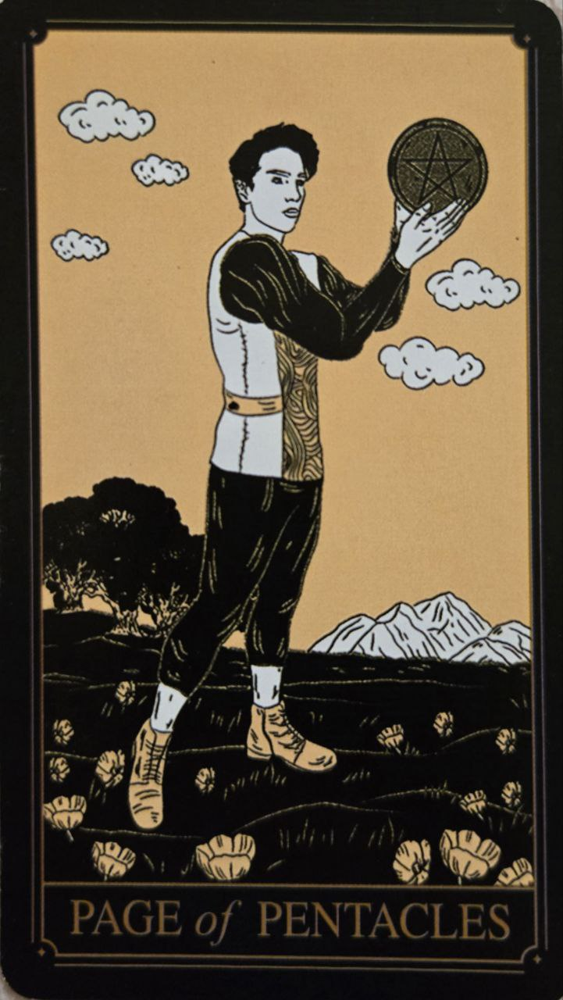
Symbol učenia, nových príležitostí a praktického prístupu. Naznačuje začiatok cesty vedúcej k rastu a úspechu.
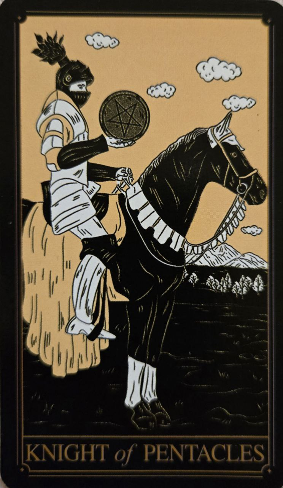
Karta spoľahlivosti, disciplíny a vytrvalosti. Predstavuje človeka, ktorý postupuje pomaly, ale isto smerom k svojim cieľom.
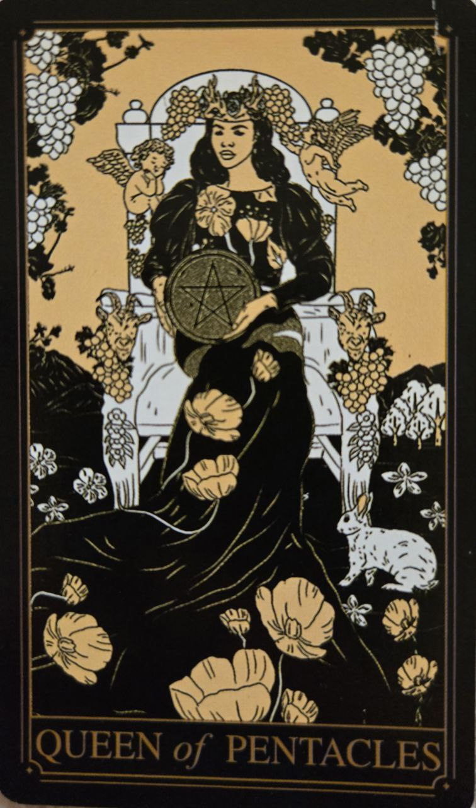
Predstavuje starostlivosť, stabilitu a praktickú múdrosť. Je symbolom človeka, ktorý dokáže vytvárať bezpečné a harmonické prostredie.
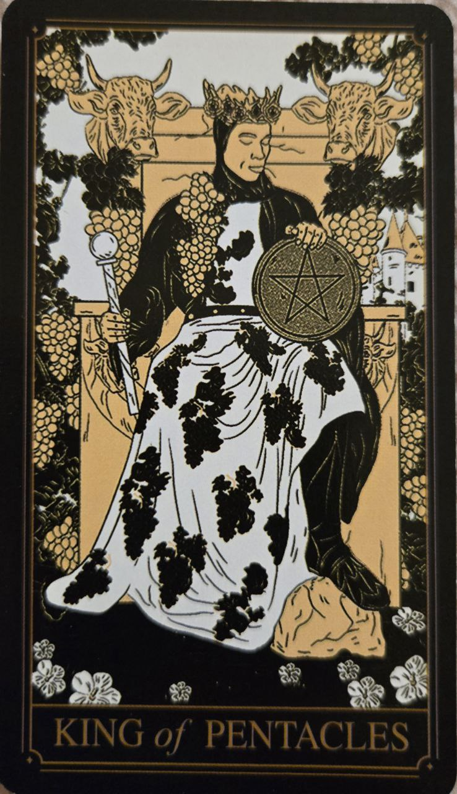
Karta úspechu, hojnosti a zodpovedného vedenia. Predstavuje skúsenosť, stabilitu a schopnosť budovať dlhodobé hodnoty.